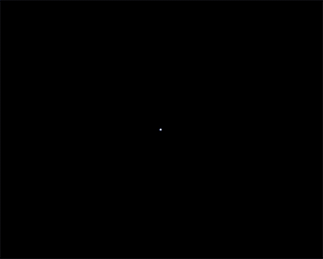
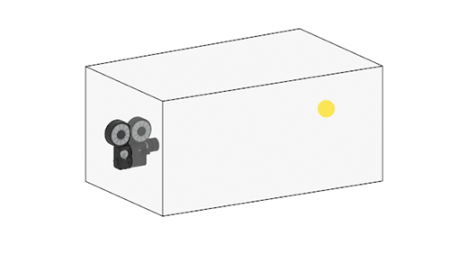
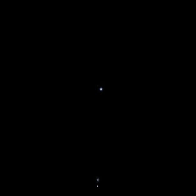
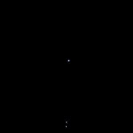
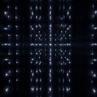
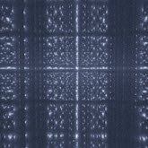

随时间设置关键帧的 specular_ray_depth (1-50)
本简单教程介绍如何创建无限镜像场景。其中会演示在反射立方体内多次跟踪灯光时发生的情况。增加了 specular_ray_depth 以显示立方体内的多个反射。场景中包含一个内含点光源（远端）的简单反射锥形立方体和一个指向它的摄影机（也位于立方体内部）。
要下载场景文件，请单击此处。
首先，创建一个立方体，并在一个方向上向外扩展。
选择立方体的终止面，然后使其四周稍微横向扩展。这有助于创建更多内部反射。
创建一个点光源，并将其放置在朝向锥形立方体背面（锥形端）的位置。
创建一个摄影机，并将其放置在立方体的另一端（在立方体内部），同时指向点光源。

指向锥形反射立方体内部点光源的摄影机

使用默认 specular_ray_depth 为 1 的渲染
增加 specular_ray_depth 值会显著增加渲染时间。
|  |  |  |
| 1（默认值） | 10 | 20 |
在最终渲染时，可能需要增加镜面反射采样数 以解决部分 specular_roughness 噪波。